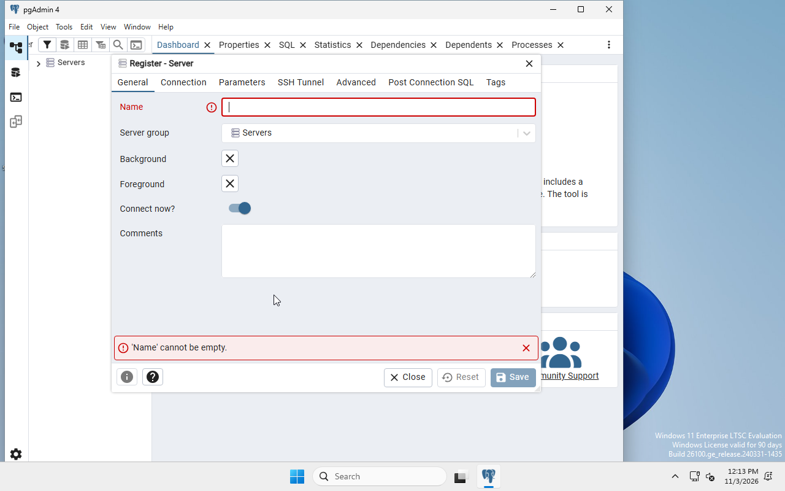
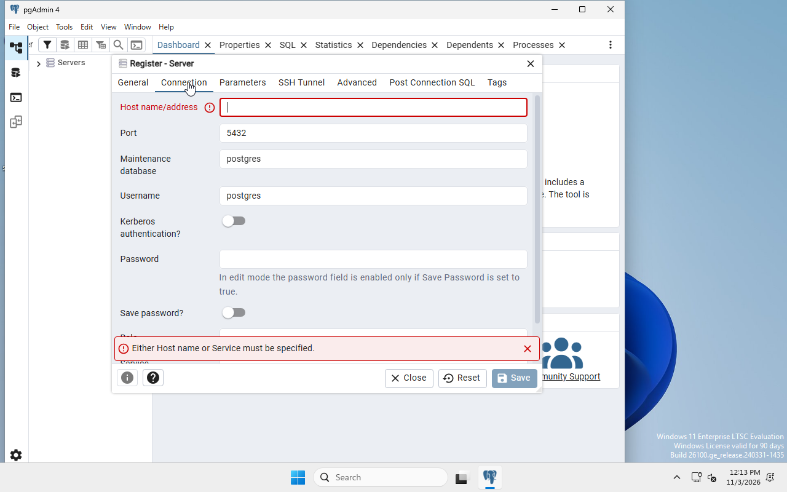
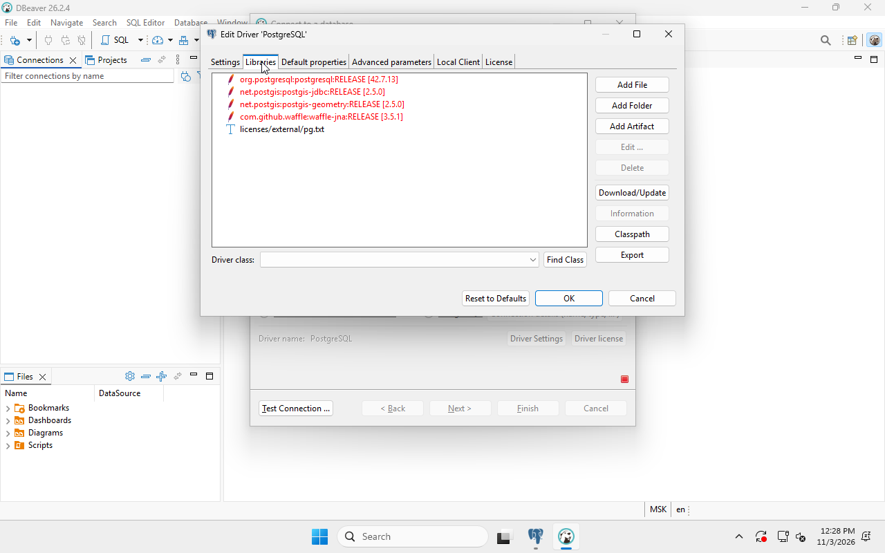
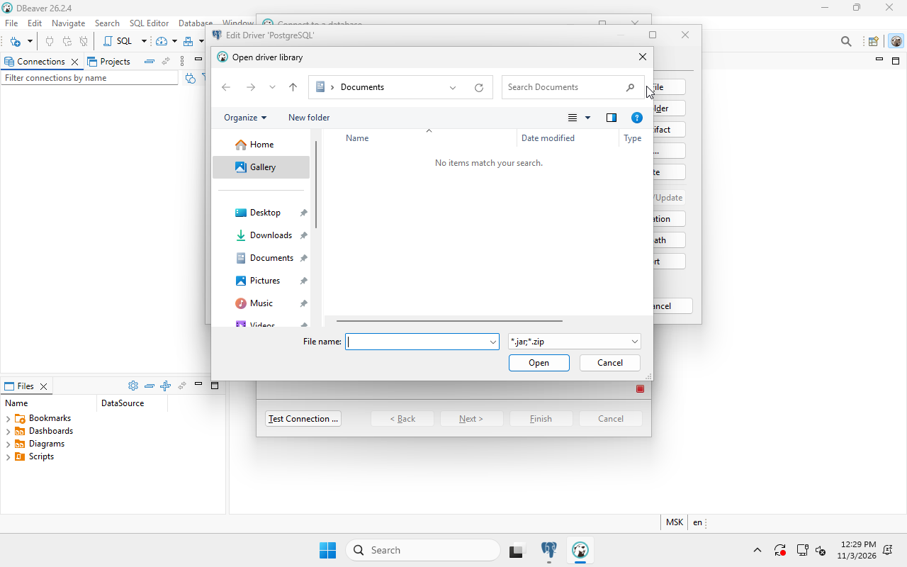
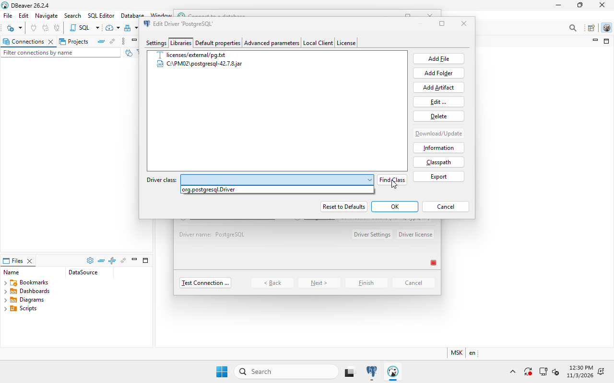

Образец — учебный центр «Меридиан», номер 00. В индивидуальной работе использовать собственную область 01–30. Выполнять образец второй самостоятельной работой не требуется: он объясняет действия и проверку.
Подготовка учебной среды
Прочитать паспорт и определить границы работы
Открыть предметные области, затем карточку своего номера. Сопоставить номер и название с назначением этой практики. Скачать архив карточки; файл stand.json — паспорт стенда, clients.csv — исходные записи, client-connection.json — исходное подключение учебного клиента. Папка checks содержит формы протоколов, а не готовые результаты.
В образце используются PM02-V00, порт 5540, corpdata_00, lab_sql_00, C:\DBAdmin_00. Для своего варианта все эти значения взять из таблицы карточки. Имена ролей БД client01–client05 одинаковы в разных изолированных ВМ и не содержат номер области.
Проверка: номер, название области и параметры подключения записаны до создания ВМ. Открыт собственный архив; 00 не используется вместо индивидуального номера.
Создать виртуальную машину на основном компьютере
Установить Oracle VirtualBox 7.2 из официального источника. Получить Windows 11 x64 ISO, предоставленный учреждением; для ознакомительного стенда доступен Microsoft Evaluation Center. Установочный образ и условия его использования определить до начала работы.
В VirtualBox выбрать «Создать» (New), ввести имя PM02-V00, указать ISO и тип Windows 11 x64. Выбрать ручную установку (Skip Unattended Installation), чтобы видеть ход установки. Задать 4 CPU, 6144 МБ RAM, динамический VDI 80 ГБ, EFI, TPM 2.0 и сеть NAT. Эти значения одинаковы для основного учебного маршрута; назначенные отличия брать из карточки. При нехватке ресурсов использовать подготовленное рабочее место, не уменьшать параметры ниже требований выбранной ОС.
При проверке образца допускается другой гипервизор с той же гостевой Windows; параметры и фактически использованный гипервизор записываются в исходные условия. Команды гостевой ОС остаются теми же.
Проверка: в настройках созданной ВМ видны имя, ресурсы, диск, ISO и NAT. Основной компьютер и гостевая ОС различены до запуска установщика.
Установить Windows и сохранить исходное состояние
Запустить созданную ВМ. В установщике выбрать язык и клавиатуру, подтвердить условия выбранной редакции. Выбрать пользовательскую установку и пустой диск созданной ВМ 80 ГБ; основной физический диск компьютера в этом окне ВМ не подключён. Дождаться копирования и перезапусков. Завершить начальную настройку согласно образу учреждения и создать учебного локального администратора LabAdmin; пароль задать самостоятельно.
В гостевой Windows открыть «Параметры → Система → О системе → Переименовать этот компьютер» и задать PM02-V00, затем перезапустить ВМ. Войти как LabAdmin. Проверить через winver редакцию и сборку. Установить необходимые обновления выбранного образа, дождаться завершения и перезапуска. Если используется другой интерфейс Windows, сопоставить русские названия с английскими: Settings, System, About, Rename this PC.
Для ознакомительной редакции подключить ВМ к Интернету и завершить штатную активацию через «Параметры → Система → Активация»; проверить действующий статус и срок ознакомления. Образец выполнен в Windows 11 Enterprise LTSC Evaluation, сборка 26100, с английскими названиями окон. Для занятия использовать подготовленный образ учреждения либо действующую ознакомительную установку, сохраняя её условия применения.
Установить Windows и сохранить исходное состояние (продолжение)
Выключить гостевую ОС. В VirtualBox выбрать ВМ → «Снимки» (Snapshots) → «Сделать» (Take), назвать PM02-00-clean. Вновь запустить ВМ. Снимок фиксирует состояние дисков ВМ; он не заменяет внешнюю резервную копию.
Проверка: hostname в гостевом PowerShell выводит PM02-V00; winver показывает выбранную Windows; в менеджере ВМ существует исходный снимок до учебных изменений.
Подготовить рабочие файлы внутри ВМ
Скачать индивидуальный ZIP из браузера внутри ВМ. Открыть его в Проводнике, выбрать «Извлечь всё», затем разместить содержимое в C:\PM02\v00 для образца. В индивидуальной работе использовать C:\PM02\vXY. Если установщики перенесены с основного компьютера, копировать их в ВМ; запускать установку уже там.
В «Пуск» найти Windows PowerShell, выбрать «Запуск от имени администратора». Проверить место работы:
hostname
Get-CimInstance Win32_ComputerSystem |
Select-Object Manufacturer, Model
Get-Content C:\PM02\v00\stand.json -Encoding UTF8
Команда hostname определяет текущий компьютер; модель позволяет сопоставить его с ВМ. При несовпадении имени остановиться и открыть консоль нужной ВМ. Создать папку C:\PM02\results_00 через Проводник. В ней хранить протоколы и скриншоты без паролей.
Проверка: распакованные файлы принадлежат своей области; имя гостя совпадает с паспортом. Все следующие установки и команды выполняются внутри ВМ.
Установка сервера и подключений
Проверить порт перед установкой
Порт — номер сетевой точки подключения службы. В образце сервер слушает 5540; у области 01 — 5541. В администраторском PowerShell гостя выполнить:
Get-NetTCPConnection -LocalPort 5540 -State Listen -ErrorAction SilentlyContinue
Пустой результат означает отсутствие найденного слушателя на этом порту в момент проверки. Если строка есть, записать OwningProcess и определить процесс через Get-Process -Id НОМЕР. Не завершать неизвестную службу: выбрать чистый снимок или согласованный свободный порт, затем исправить его во всех параметрах стенда и отчёте.
Проверка: порт свободен либо конфликт установлен и разрешён до установки. Значение соответствует карточке.
Установить PostgreSQL
Открыть официальную страницу PostgreSQL для Windows, перейти к установщику EDB и выбрать PostgreSQL 17 x64. Для образца закреплён установщик 17.11; использовать его прямую ссылку в разделе файлов. Запустить установщик в гостевой Windows от администратора.
При запросе контроля учётных записей подтвердить запуск установщика с проверенным издателем EnterpriseDB Corporation. В мастере нажать Next; оставить C:\Program Files\PostgreSQL\17. В компонентах оставить PostgreSQL Server, pgAdmin 4 и Command Line Tools; Stack Builder для этой работы не требуется. Для данных оставить C:\Program Files\PostgreSQL\17\data. Задать пароль суперпользователя postgres, порт 5540, локаль Default locale. Просмотреть сводку и выполнить установку. В конце снять запуск Stack Builder.
Записать версию, каталоги и порт. Пароль сохранить локально способом, принятым в учебной среде; его не помещать в снимки, SQL-файлы и отчёт.
Проверка: мастер завершён без ошибки; в «Пуск» появились PostgreSQL и pgAdmin, а в каталоге bin существуют psql.exe и pg_dump.exe.


Проверить службу и фактический порт
В PowerShell администратора выполнить:
Get-Service *postgres* | Select-Object Name, Status
Get-NetTCPConnection -LocalPort 5540 -State Listen |
Select-Object LocalAddress, LocalPort, OwningProcess
Сохранить фактическое имя службы, обычно postgresql-x64-17, со статусом Running. Если служба остановлена, открыть services.msc, найти именно её и просмотреть причину; проверить журнал «Приложение» и выбранный порт. После успешного запуска повторить проверку. Не переустанавливать СУБД поверх неизвестного состояния.
Проверка: служба запущена и существует слушатель собственного порта. Совпадение только имени установленной программы этого не подтверждает.
Создать учебного администратора Windows
Под LabAdmin в гостевом PowerShell администратора выполнить:
$pass = Read-Host 'Пароль dbadmin_00' -AsSecureString
New-LocalUser -Name 'dbadmin_00' -Password $pass
$admins = Get-LocalGroup -SID 'S-1-5-32-544'
Add-LocalGroupMember -Group $admins -Member 'dbadmin_00'
New-Item -Path 'C:\DBAdmin_00' -ItemType Directory
$account = "${env:COMPUTERNAME}\dbadmin_00"
icacls C:\DBAdmin_00 /grant "${account}:(OI)(CI)M"
icacls C:\PM02 /grant "${account}:(OI)(CI)M"
Get-LocalUser -Name 'dbadmin_00' | Select-Object Name, Enabled
Get-LocalGroupMember -Group $admins
Группа определяется по SID, поэтому команда подходит для русской и английской Windows. Административные полномочия выдаются созданному учебному пользователю внутри ВМ. Физический компьютер и его пользователей эти команды не затрагивают, если консоль открыта в правильном госте.
Создать учебного администратора Windows (продолжение)
Право M разрешает созданному пользователю изменять учебные файлы в двух указанных рабочих каталогах. Оно не изменяет права остальных каталогов Windows. Выйти из Windows через «Пуск → имя пользователя → Выйти» и войти как .\dbadmin_00, введя заданный пароль. Первый вход создаёт профиль. Дальше регистрировать подключения pgAdmin и DBeaver под этой учётной записью: их настройки хранятся в профиле пользователя. C:\DBAdmin_00 — рабочая папка задания, а не переименование системного профиля C:\Users\dbadmin_00.
Проверка: whoami показывает pm02-v00\dbadmin_00; профиль создан, рабочая папка существует, установленный PostgreSQL продолжает работать.
Зарегистрировать lab_sql_00 в pgAdmin
Запустить pgAdmin 4 и дождаться его рабочего окна. На свежей установке первый запуск может занять несколько минут. Если появилось «The pgAdmin 4 server could not be contacted», проверить завершение обновлений Windows и журнал %APPDATA%\pgAdmin\pgadmin4.log, закрыть окно ошибки и повторить запуск; не переустанавливать работающую службу PostgreSQL. Если ошибка повторяется, зафиксировать сообщение и журнал. Если запрошен главный пароль хранилища pgAdmin, задать его отдельно от пароля postgres. В дереве слева нажать правой кнопкой Servers → Register → Server. На General указать lab_sql_00. На Connection заполнить Host 127.0.0.1, Port 5540, Maintenance database postgres, Username postgres, пароль установленного сервера; нажать Save.
Раскрыть подключение, выбрать БД postgres, открыть Tools → Query Tool и выполнить выделенный запрос кнопкой Execute/F5:
SELECT version(), current_database(), current_user,
inet_server_port();
SHOW data_directory;
Имя lab_sql_00 — подпись подключения pgAdmin. Она не переименовывает Windows, каталог данных или службу PostgreSQL. Фактический порт проверяется запросом, а не только подписью.
Проверка: получены версия PostgreSQL, БД postgres, пользователь postgres, порт 5540 и каталог данных. Сохранить снимок результатов без поля пароля.


Подготовить DBeaver и открыть подключение
Скачать DBeaver Community Windows x86-64 из файлов. Для ZIP-версии извлечь архив в отдельный каталог внутри ВМ, открыть dbeaver.exe. Отдельная Java для штатного архива не требуется: среда включена. При первом запуске открывается Product Configuration. Оставить язык English и светлую тему Light, вид структуры Full; дополнительные интеграции и коммерческие драйверы для этого стенда не требуются. На Data collection выбрать Do not share anonymous usage statistics. На Final steps снять Create sample database и Turn on Tip of the day, затем Apply. Для работы используется собственная PostgreSQL, а не демонстрационная SQLite.
Выбрать Database → New Database Connection → PostgreSQL → Next. Если открылся выбор драйвера, оставить PostgreSQL standard driver и вновь Next. На Main указать Host 127.0.0.1, Port 5540, Database postgres, Username postgres и пароль сервера. Поле URL формируется из этих значений; править одновременно Host и готовую строку URL не требуется.
Проверка: открыт мастер подключения PostgreSQL с параметрами своего сервера. Следующий шаг завершает это же подключение.
Подготовить JDBC-драйвер и проверить подключение
JDBC-драйвер — библиотека, через которую DBeaver обращается к PostgreSQL. Нажать Test Connection. Если открылось Download driver files, выбрать один путь подготовки.
При доступном Интернете: нажать Download, дождаться загрузки библиотек и результата проверки. Зафиксировать фактическую версию драйвера из окна Connection test.
При использовании подготовленного JAR: нажать Edit Driver, открыть Libraries. В новом стенде красным отмечены отсутствующие сетевые библиотеки PostgreSQL, PostGIS и Waffle. Для этой таблицы и входа по имени/паролю PostGIS и интегрированная аутентификация не используются. Выделить четыре отсутствующие строки артефактов, нажать Delete и подтвердить Yes. Удаляются записи из настройки этого драйвера; установленный сервер и данные БД не затрагиваются. Строку licenses/external/pg.txt оставить.
Нажать Add File, выбрать C:\PM02\postgresql-42.7.8.jar, заранее полученный по официальной ссылке из файлов. Нажать Find Class, выбрать org.postgresql.Driver, затем OK. В образце проверен этот автономный путь и версия 42.7.8. После возврата в мастер повторить Test Connection, если тест не продолжился автоматически. Не удалять настройки других драйверов приложения.
Окно Connection test должно показать Connected, PostgreSQL 17.11 и фактическую версию JDBC. Закрыть его кнопкой OK.
Подготовить JDBC-драйвер и проверить подключение (продолжение)
Завершить создание подключения, задать имя lab_sql_00_admin. Открыть SQL Editor → New SQL Script и выполнить SELECT current_user, inet_server_port(); сочетанием Ctrl+Enter.
Проверка: сторонний клиент действительно подключён к нужному PostgreSQL; результат показывает postgres и собственный порт. pgAdmin и DBeaver являются клиентами одного сервера.




Создание БД, данных и пользователей
Создать базу данных
В pgAdmin выбрать Query Tool БД postgres, убедиться, что активна административная учётная запись. Выполнить отдельно:
CREATE DATABASE corpdata_00 ENCODING 'UTF8' TEMPLATE template0;
CREATE DATABASE выполнять вне явного BEGIN. Если имя уже существует, не удалять БД: определить, осталась ли она от предыдущего выполнения, и использовать настроенный снимок либо продолжить с проверкой её содержимого. Обновить дерево Databases и открыть новый Query Tool именно для corpdata_00.
SELECT current_database(), current_user;
Проверка: текущая БД — corpdata_00, пользователь — postgres. В своём варианте имя БД заменено до выполнения команды.
Создать clients и разобраться с автоинкрементом
В Query Tool БД corpdata_00 выполнить весь следующий блок один раз:
CREATE TABLE public.clients (
id INTEGER GENERATED BY DEFAULT AS IDENTITY PRIMARY KEY,
name VARCHAR(120) NOT NULL,
email VARCHAR(160) NOT NULL,
reg_date DATE NOT NULL
);
PRIMARY KEY запрещает повтор идентификатора. IDENTITY получает очередной номер из последовательности. VARCHAR(120) ограничивает длину строки; DATE хранит дату без времени. Для индивидуальной работы структура сохраняется, а записи меняются.
Проверить дерево Schemas → public → Tables → clients → Columns и запрос:
SELECT column_name, data_type, is_identity, is_nullable
FROM information_schema.columns
WHERE table_schema = 'public' AND table_name = 'clients'
ORDER BY ordinal_position;
Проверка: существуют четыре поля в нужном порядке; id имеет тип integer и is_identity = YES, reg_date — date. Отдельно в Constraints виден первичный ключ.

Импортировать клиентов собственной области
Открыть clients.csv своего архива в Блокноте: первая строка — name,email,reg_date, далее записи UTF-8 с запятой и датами YYYY-MM-DD. Идентификаторы не включены: их создаёт БД.
В pgAdmin нажать правой кнопкой public.clients → Import/Export Data. Выбрать Import, указать полный путь C:\PM02\v00\clients.csv, формат csv, Encoding UTF8, Header Yes, Delimiter ,. На Columns оставить только name, email, reg_date, исключить id. Выполнить импорт и открыть сообщение процесса. Затем:
SELECT id, name, email, reg_date
FROM public.clients ORDER BY id;
SELECT count(*) AS rows, min(id), max(id)
FROM public.clients;
Сопоставить строки с таблицей исходных данных карточки, а не с числом другого варианта. Если импорт выполнен дважды, сначала установить это по строкам и исходному снимку; не удалять произвольные данные ради совпадения числа. Вернуться к состоянию до импорта и выполнить его один раз.
Проверка: число записей и каждое значение совпали с собственным CSV. Сохранить таблицу результата и имя исходного файла.

Создать пять ролей с правом входа
В pgAdmin раскрыть сервер → Login/Group Roles → Create → Login/Group Role. Для каждой из пяти ролей на General задать client01, …, client05, на Definition — отдельный пароль, на Privileges включить Can login. Superuser, Create roles, Create databases и Replication оставить выключенными. Сохранить.
Вместо готовых опубликованных паролей генерировать собственные: открыть PowerShell гостя и выполнить пять раз, записывая результат в локальное защищённое место:
$bytes = New-Object byte[] 15
$rng = [Security.Cryptography.RandomNumberGenerator]::Create()
$rng.GetBytes($bytes)
[Convert]::ToBase64String($bytes) + '!a7'
$rng.Dispose()
Суффикс обеспечивает наличие буквы, цифры и специального символа; случайная часть различается. Проверить без вывода хешей паролей:
SELECT rolname, rolcanlogin, rolsuper, rolcreatedb, rolcreaterole
FROM pg_roles WHERE rolname BETWEEN 'client01' AND 'client05'
ORDER BY rolname;
Проверка: пять отдельных ролей могут входить, но не являются суперпользователями и не управляют другими ролями. Пароли отсутствуют на сохраняемом снимке.
Назначить права таблицы и последовательности
В Query Tool corpdata_00 под postgres выполнить:
REVOKE ALL ON public.clients FROM PUBLIC;
GRANT CONNECT ON DATABASE corpdata_00
TO client01, client02, client03, client04, client05;
GRANT USAGE ON SCHEMA public
TO client01, client02, client03, client04, client05;
GRANT SELECT, INSERT ON public.clients TO client01, client02;
GRANT SELECT ON public.clients TO client03;
GRANT SELECT, UPDATE ON public.clients TO client04;
GRANT SELECT, DELETE ON public.clients TO client05;
GRANT USAGE ON SEQUENCE public.clients_id_seq TO client01, client02;
Права на схему позволяют найти объект, права таблицы — выполнить операцию, а USAGE последовательности — получить новый id. Имена последовательности проверить в Schemas → public → Sequences; приведённое имя получается при показанном создании таблицы.
SELECT grantee, privilege_type
FROM information_schema.role_table_grants
WHERE table_schema='public' AND table_name='clients'
AND grantee LIKE 'client%'
ORDER BY grantee, privilege_type;
Проверка: набор прав каждой роли совпал с таблицей задания. В собственной области заменено имя БД в GRANT CONNECT; роли не получают права администратора.

Проверка доступа и SQL-выгрузка
Создать подключения пользователей в DBeaver
Для client01–client05 повторить Database → New Database Connection → PostgreSQL. Указать один сервер 127.0.0.1, собственный порт и corpdata_00; менять именно Username и пароль. Назвать подключения lab_sql_00_client01 … lab_sql_00_client05. Не переиспользовать административное подключение для доказательства ограниченных прав.
В SQL Editor каждого подключения выполнить:
SELECT current_database(), current_user, inet_server_port();
SELECT id, name, email, reg_date FROM public.clients ORDER BY id;
Текущий пользователь должен совпасть с подписью выбранного подключения. В форме checks\sql-access.csv заполнить фактический результат; до запуска поля результата пусты.
Проверка: пять учётных записей подключаются, каждая читает индивидуальные записи. Доказательство содержит результат current_user.
Проверить INSERT и запрет DELETE у client01 и client02
В DBeaver выбрать подключение client01. Выполнять по одному SQL-оператору в указанном порядке: поставить курсор внутрь оператора до ; и нажать Ctrl+Enter. При выделении текста выделять только этот оператор. Не запускать весь блок с ожидаемой ошибкой одной общей командой. Явный BEGIN делает проверку временной даже при включённом autocommit клиента:
BEGIN;
INSERT INTO public.clients(name,email,reg_date)
VALUES ('Проверка вставки','insert@example.test',DATE '2026-11-03')
RETURNING id;
SELECT count(*) FROM public.clients;
ROLLBACK;
После ROLLBACK проверить исходное число строк. Затем отдельная проверка:
BEGIN;
DELETE FROM public.clients WHERE id = 1;
ROLLBACK;
Ожидание — отказ permission denied for table clients, SQLSTATE 42501. После ошибки обязательно выполнить ROLLBACK, иначе следующие команды останутся в прерванной транзакции. Повторить эти проверки под client02. Номера последовательности могут иметь пропуски после отката — это не потерянные строки.
Проверка: обе роли вставляют, но не удаляют; исходные записи сохранены. Сохранить собственные сообщения об успехе и отказе.
Проверить роли чтения, изменения и удаления
Под client03 подтвердить успешный SELECT, затем выполнить BEGIN, попытку INSERT из предыдущего шага и ROLLBACK: ожидается отказ. Под client04 выполнить отдельно:
BEGIN;
UPDATE public.clients SET name = name || ' (тест)' WHERE id = 1;
SELECT id, name FROM public.clients WHERE id = 1;
ROLLBACK;
После отката имя должно стать исходным. Попытку DELETE под client04 проверить в отдельной транзакции с ожидаемым отказом и последующим ROLLBACK.
Под client05 выполнить:
BEGIN;
DELETE FROM public.clients WHERE id = 1 RETURNING id;
SELECT count(*) FROM public.clients;
ROLLBACK;
Попытку UPDATE под client05 проверить отдельно: она должна завершиться отказом. У каждого подключения перед проверкой выполнить SELECT current_user. Не выполнять все отрицательные команды одним скриптом, автоматически обрывающимся при первой ошибке.
Проверить роли чтения, изменения и удаления (продолжение)
После отдельного ROLLBACK подтвердить пользователя и сохранение исходного числа строк:
SELECT current_user, count(*) AS baseline_rows FROM public.clients;
В образце получается 5; для своей области взять ожидаемое число из собственного CSV. Если в верхней панели SQL-редактора указано <N/A>, сначала выбрать своё подключение в списке активного источника; открытый SQL-файл сам по себе не подтверждает выбранную роль.
Проверка: client03 только читает, client04 изменяет, client05 удаляет; запрещённые операции отклонены. Все исходные записи после проверок восстановлены откатом.


Получить и проверить SQL-файл
В PowerShell гостя перейти к полному пути программы и запустить команду, подставив собственный порт и номер:
& 'C:\Program Files\PostgreSQL\17\bin\pg_dump.exe' `
-h 127.0.0.1 -p 5540 -U postgres -W -d corpdata_00 `
--format=plain --table=public.clients --no-owner --no-privileges `
--file='C:\PM02\results_00\clients_00.sql'
$LASTEXITCODE
При запросе ввести пароль; он не включён в команду. Код завершения 0 означает успешное завершение утилиты. Открыть clients_00.sql в Блокноте: найти CREATE TABLE public.clients, описание id, блок данных COPY public.clients и несколько собственных записей. Первые десять строк могут оказаться служебной шапкой, поэтому дополнительно сохранить содержательные фрагменты структуры и данных.
Файл содержит таблицу и данные, но не пароли и не полный перечень глобальных ролей. Матрицу прав приложить отдельным протоколом. Выгрузка таблицы не является образом Windows или снимком ВМ.
Проверка: SQL-файл существует, не пуст, относится к собственной БД и содержит исходные записи. В отчёте приведены первые десять строк и фрагменты таблицы/данных.
Проверить индивидуальное условие подключения
Открыть client-connection.json своего архива в Блокноте. Сопоставить host, port и database с паспортом; сохранить исходный файл отдельно. В DBeaver создать подключение по этим исходным значениям, выбрать client03 и его локальный пароль. Выполнить Test Connection и сохранить фактический результат.
Если карточка задаёт неверный порт, проверить слушатель и исправить только порт. Если задано неверное имя БД, сначала подтвердить доступность сервера, затем выбрать существующую corpdata_XY. Если подключение изначально верное, не выдумывать ошибку: выполнить указанную в карточке проверку запрещённой операции или данных. Повторить ту же проверку после исправления. Подробные ветви раскрыты в индивидуальных случаях.
Проверка: исходное условие, факт, выбранное изменение и повторный результат связаны. Работоспособность другого сервера или вход под postgres не заменяют проверку client03.
Пользователи Windows, профиль и права
Продолжить работу под созданным dbadmin_00. Его профиль и рабочая папка подготовлены перед регистрацией подключений.
Задать DB_HOME в нужном профиле
Под dbadmin_00 открыть обычный PowerShell и выполнить:
[Environment]::SetEnvironmentVariable(
'DB_HOME', 'C:\Program Files\PostgreSQL\17', 'User')
Закрыть окно и открыть новое через меню «Пуск». Если переменная ещё не появилась, выйти из учётной записи Windows и войти вновь: уже работающий процесс может хранить прежнюю копию окружения. Проверить:
whoami
$env:DB_HOME
Test-Path (Join-Path $env:DB_HOME 'bin\psql.exe')
Test-Path 'C:\DBAdmin_00'
Значение User относится к текущему пользователю. Если выполнить настройку под LabAdmin, она не создаст переменную профиля dbadmin_00. В этой работе DB_HOME указывает на каталог установки СУБД, а каталог данных отдельно записан из SHOW data_directory.
Проверка: в новом окне правильный пользователь, ожидаемый путь и два результата True.
Создать пользователя ОС client03 и каталог отчётов
Под dbadmin_00 открыть PowerShell от имени администратора. Имя пользователя проверить whoami. Выполнить:
$pass = Read-Host 'Пароль пользователя Windows client03' -AsSecureString
New-LocalUser -Name 'client03' -Password $pass
$desktop = [Environment]::GetFolderPath('Desktop')
$reports = Join-Path $desktop 'sql_reports_00'
New-Item -Path $reports -ItemType Directory
Set-Content -Path (Join-Path $reports 'readme.txt') `
-Value 'PM02: read access test' -Encoding UTF8
$reports
Роль client03 в PostgreSQL и пользователь Windows client03 хранятся в разных системах. У них отдельные пароли и независимые разрешения; совпадение имени используется для учебного сопоставления. Пароль БД не проверяет права NTFS.
Проверка: локальный пользователь существует и не добавлен в «Администраторы»; каталог расположен на рабочем столе текущего dbadmin_00, в нём есть контрольный файл.
Настроить и прочитать ACL
В том же администраторском PowerShell, где определена переменная $reports, выполнить:
icacls $reports /inheritance:r
icacls $reports /grant:r '*S-1-5-32-544:(OI)(CI)F'
icacls $reports /grant:r '*S-1-5-18:(OI)(CI)F'
icacls $reports /grant:r "${env:COMPUTERNAME}\client03:(OI)(CI)RX"
icacls $reports
/inheritance:r удаляет унаследованные разрешения; применяется только к новому учебному каталогу. F — полный доступ, RX — чтение и выполнение/обход каталога, OI/CI передают правило файлам и подпапкам. SYSTEM оставлен с полным доступом для работы ОС. Явный запрет Deny для этого задания не нужен: отсутствие права записи достаточно. В стандартном новом каталоге после отключения наследования остаются только заданные явные разрешения; при иных строках сначала выяснить их происхождение.
Если окно PowerShell закрывалось, вновь получить $reports = Join-Path ([Environment]::GetFolderPath('Desktop')) 'sql_reports_00' перед командами.
Проверка: в выводе Administrators — F, SYSTEM — F, локальный client03 — RX. Нет разрешения записи для client03 или общей группы Users на этот каталог.
Проверить доступ от имени client03
Записать полный путь, выведенный предыдущим шагом. Через Win+R выполнить runas /profile /user:.\client03 powershell.exe и ввести пароль Windows, а не PostgreSQL. В новом окне выполнить whoami, затем, подставив фактический путь:
Get-Content 'C:\Users\dbadmin_00\Desktop\sql_reports_00\readme.txt'
New-Item 'C:\Users\dbadmin_00\Desktop\sql_reports_00\denied.txt' -ItemType File
Первая команда должна прочитать контрольный текст; вторая — завершиться Access is denied / «Отказано в доступе». Не считать сообщение об ошибке доказательством правильного ACL, если путь или имя пользователя неверны. После проверки закрыть окно client03. Под администратором убедиться, что denied.txt не появился.
Если профиль использует иной путь рабочего стола, брать его из $reports, не копировать пример C:\Users\... дословно. В учебном образе с недоступным родительским каталогом сначала проверить проход по точному пути; не предоставлять client03 запись или полный доступ ради обхода ошибки.
Проверка: один и тот же существующий файл читается, запись в тот же каталог отклонена под подтверждённой учётной записью client03.

Сохранить настроенный снимок
Завершить транзакции клиентов, закрыть приложения и штатно выключить гостевую Windows. В менеджере ВМ создать снимок PM02-00-configured и записать его время. Запустить ВМ, войти под dbadmin_00, проверить службу PostgreSQL и подключение corpdata_00. Исходный снимок clean сохранить.
Откат снимка возвращает состояние дисков к его моменту. Перед откатом скопировать необходимые отчёты во внешнюю папку; это действие выполняется осознанно, а не как автоматическая «очистка» ошибок.
Проверка: оба снимка видны в менеджере ВМ, после запуска сервер и рабочие данные доступны. Для диагностики используется эта же настроенная ВМ.
Комплексная диагностика
Один раз сохранить паспорт системы
Под dbadmin_00 открыть msinfo32: Win+R → msinfo32 → Enter. Записать выпуск ОС, CPU, RAM, модель системы и путь Windows. Через Win+R открыть dxdiag, просмотреть «Система», «Экран» и «Звук», сохранить сведения кнопкой «Сохранить все сведения». В виртуальной машине показаны виртуальные устройства; их состояние не доказывает исправность физического диска или видеокарты основного компьютера.
Сохранить один набор system.txt/снимков в папке результатов. В следующих разделах использовать его по ссылке, а не повторять сбор. Если позднее изменится драйвер или конфигурация, повторить только соответствующую проверку и обозначить состояние «после».
Проверка: в паспорте различены гостевая Windows и основной компьютер, указано время фиксации. Есть сведения о системе и устройствах.
Отфильтровать события за 48 часов
Открыть eventvwr.msc. В «Пользовательские представления → Создать» выбрать период «За последние 24 часа → Особый диапазон» и задать начало ровно на 48 часов раньше текущего времени и конец текущим временем. Отметить уровни «Критическая», «Ошибка», журналы «Система» и «Приложение». Назвать представление «ПМ02 — 48 часов».
Альтернативный способ задать то же окно в PowerShell:
$end = Get-Date
$start = $end.AddHours(-48)
$events = Get-WinEvent -FilterHashtable @{
LogName=@('System','Application'); Level=@(1,2)
StartTime=$start; EndTime=$end
} -ErrorAction SilentlyContinue
$events | Select-Object TimeCreated, Id, ProviderName, Message |
Format-List
Выбрать три относящихся к случаю события, открыть каждое и заполнить checks\events.csv: время, код/имя, источник, описание, связь с симптомом. Сохранить выбранные события в .evtx через контекстное меню либо сделать читаемые снимки карточек. Отдельный снимок фильтра подтверждает границы периода.
Проверка: все выбранные записи попали в собственное окно 48 часов. Копирование «ошибок за неделю» из прежнего раздела не заменяет эту выборку.
Разобрать отсутствие событий и учебный журнал
Если подходящих ошибок меньше трёх, записать фактическое число и период. Не объявлять отсутствие ошибок доказательством полной исправности. Для обучения анализу использовать подготовленный сценарий стенда: запустить Prepare-Case.ps1 своей области из следующего шага и повторить выборку, отобрав источник PM02Lab.
События PM02Lab — специально созданное учебное досье; их происхождение подписано в таблице и отчёте. Разобрать текст, гипотезу и необходимую проверку по карточке. Не объединять эти записи с самопроизвольными ошибками ОС и не выдавать их за три аппаратных сбоя. На экзамене действовать с фактической системой и указаниями площадки.
Разобрать отсутствие событий и учебный журнал (продолжение)
После подготовки случая вновь задать конец периода текущим временем. Для нового классического источника отбирать записи по ProviderName уже после чтения журнала:
$end = Get-Date
$start = $end.AddHours(-48)
Get-WinEvent -FilterHashtable @{
LogName='Application'; StartTime=$start; EndTime=$end
} | Where-Object ProviderName -eq 'PM02Lab' |
Select-Object -First 3 TimeCreated, Id, ProviderName, Message |
Format-List
Если запись ещё не появилась сразу после создания, обновить представление и повторить чтение; заново создавать случай для этого не требуется.
Проверка: таблица фактической ОС и разбор учебного случая различены. В отчёте нет выдуманных событий для достижения количества.
Подготовить управляемый учебный случай
В Проводнике проверить путь своего архива. Открыть PowerShell администратора внутри ВМ и выполнить для образца:
powershell.exe -NoProfile -ExecutionPolicy Bypass `
-File C:\PM02\v00\Prepare-Case.ps1
Параметр Bypass действует только в этом отдельном процессе и не меняет постоянную политику Windows. Сценарий сверяет имя и модель гостя с паспортом. Он создаёт три учебных элемента автозагрузки текущего пользователя, три помеченные записи PM02Lab и контрольные файлы случая; он не меняет защиту, системные службы, роли БД или существующие данные.
При несовпадении имени гостя остановиться и исправить выбор ВМ. Переименовывать основной компьютер ради запуска сценария не требуется. Исходное состояние автозагрузки сохраняется скриптом локально для возврата; повторный запуск не заменяет его.
Проверка: сценарий завершился в нужной ВМ; появились только объекты с префиксом PM02Lab. Их происхождение указано в протоколе.
Проанализировать три элемента автозагрузки
Открыть Диспетчер задач сочетанием Ctrl+Shift+Esc → «Автозагрузка приложений» (Startup apps). Выбрать три несистемных элемента. Если использован подготовленный случай, это PM02Lab-Report, PM02Lab-Reminder, PM02Lab-Workload. Их назначение раскрыто в паспорте и исходных .cmd-файлах: просмотрщик отчётов, учебное напоминание, запускаемая по необходимости вычислительная нагрузка.
Для каждого записать имя, путь, издателя при наличии, исходное состояние, назначение и обоснование автоматического запуска. Значение «высокое влияние» само по себе не доказывает ненужность. Защитные и системные компоненты не выбирать как произвольные кандидаты на отключение.
Проанализировать три элемента автозагрузки (продолжение)
Windows может показать учебные записи общим именем Windows Command Processor. Нажать правой кнопкой заголовок таблицы, включить «Командная строка» (Command line) и расширить столбец. Различать Report.cmd, Reminder.cmd и Workload.cmd по полному пути C:\PM02\case_00. Имена ключей и команды также можно получить в PowerShell:
Get-CimInstance Win32_StartupCommand |
Where-Object Name -like 'PM02Lab-*' |
Select-Object Name, Command, Location, User | Format-List
Для случая лишней учебной нагрузки отключить только PM02Lab-Workload; зафиксировать исходное состояние и действие. Отключение автозагрузки не завершает уже запущенный процесс и не удаляет программу. Службы Windows в этом шаге не отключаются.
Проверка: разобраны три конкретные записи с назначением; изменение относится к условию своей области и может быть отменено. Таблица checks\startup.csv заполнена собственными наблюдениями.

Запустить новое антивирусное сканирование
Открыть «Параметры → Конфиденциальность и безопасность → Безопасность Windows → Защита от вирусов и угроз» (Windows Security → Virus & threat protection). Сначала записать состояние защиты и дату обновления определений. Если сторонний антивирус управляет защитой, использовать его штатное сканирование; не включать второй продукт поверх первого.
Для Microsoft Defender выбрать «Быстрая проверка» (Quick scan), дождаться окончания и записать время, тип, число проверенных объектов и результат. Альтернативный запуск из PowerShell администратора:
Start-MpScan -ScanType QuickScan
Get-MpComputerStatus | Select-Object AntivirusEnabled,
RealTimeProtectionEnabled, QuickScanStartTime,
QuickScanEndTime, AntivirusSignatureLastUpdated
Get-MpThreatDetection
Запустить новое антивирусное сканирование (продолжение)
Создать на рабочем столе SecurityScan_00 и сохранить снимок завершённой проверки или отчёт продукта. Дату окончания сопоставить с новым запуском. Пустой список обнаружений означает отсутствие записей обнаружений, а не сам по себе успешное завершение проверки.
Если угроза обнаружена, записать её имя и категорию продукта, действие и состояние; отнести к вирусу, потенциально нежелательной программе или подтверждённой уязвимости конфигурации по фактическим сведениям. При отсутствии угроз записать «В данной проверке угрозы не обнаружены». Угрозы для получения снимка не скачивать.
Проверка: в SecurityScan_00 есть результат нового завершённого сканирования, а состояние защиты и журнал прошлых обнаружений описаны отдельно.

Измерить CPU, RAM, диск, сеть и приоритеты
Зафиксировать исходные условия: открытые программы, время начала и наблюдаемый симптом. В Диспетчере задач открыть «Производительность» и в течение 60 секунд наблюдать CPU, память, диск и сеть. Этот интервал — условие учебного сравнения, а не универсальный норматив диагностики. Записать значения/диапазоны и единицы измерения в checks\resources.csv.
На вкладке «Процессы» по очереди отсортировать по CPU, памяти, диску и сети. Указать два–три процесса, заметных по соответствующему показателю; один процесс не обязан быть первым во всех столбцах. Через «Подробности» (Details) включить столбцы PID и «Базовый приоритет» (Base priority) либо открыть «Задать приоритет» только для просмотра текущего значения. Приоритет не менять.
Открыть resmon через Win+R. Во вкладках CPU, Memory, Disk, Network сопоставить имя и PID процесса с его активностью: использование CPU, рабочий набор, операции чтения/записи и сетевые соединения. Высокая загрузка при выполнении полезной работы может быть ожидаемой; по одному пику причина не устанавливается.
Проверка: есть измерения четырёх ресурсов, время и условия наблюдения, имена/PID и приоритеты двух–трёх процессов. Накопленное CPU-время не записано вместо текущего процента загрузки.
Выполнить случай нагрузки и сравнить состояния
В комплекте стенда Start-Workload.ps1 запускает ограниченную учебную нагрузку в отдельном процессе на 60 секунд и выводит его PID. Выполнять её только внутри ВМ, когда паспорт случая требует проверки влияния нагрузки:
powershell.exe -NoProfile -ExecutionPolicy Bypass `
-File C:\PM02\v00\Start-Workload.ps1
Пока процесс работает, открыть Диспетчер задач и найти именно выведенный PID. Снять те же показатели за одинаковый интервал, затем дождаться штатного завершения. Сопоставить состояние до запуска, во время и после. Учесть число виртуальных CPU: один занятый поток не обязан показывать 100 % всей системы.
Если условие своей области связано с подключением, данными или правами, основное исправление выполнить там; нагрузка служит дополнительным разбором ресурса, а не второй обязательной неисправностью. Состояния «до» и «после» подписывать по фактическому изменению. Снимок работающего процесса не заменяет объяснение его назначения.
Проверка: измерение связано с конкретным процессом и изменённым условием; после завершения нагрузка прекращается. Повторная диагностика без изменения не назначается.

Сформулировать вывод и выбрать дальнейший инструмент
В checks\problems.csv для каждого существенного наблюдения заполнить компонент, проблему, причину или гипотезу, рекомендацию и риск. Например: отказ записи под Windows client03 при успешном чтении является ожидаемым ограничением; повышение его прав нарушило бы задание. Отказ подключения при неверном порте требует сверки порта, а не обновления всех драйверов.
Если доказательств недостаточно, записать следующую проверку. Дополнительные инструменты выбирать по справочнику: SFC/DISM — при признаках повреждения системных файлов; диски — при соответствующем симптоме; обновления и драйверы — при установленной связи с проблемой. После действия повторять только проверку результата и затронутого соседнего сценария.
Проверка: каждое изменение имеет основание, сохранённое исходное состояние и проверку. Возраст драйвера, отказ ICMP и статус диска OK не превращены в готовый диагноз.
Прочитать законченные выводы образца
В результатах образца 00 доступны фактические SQL-проверки, выгрузка таблицы, отдельные события ОС и учебного журнала, измерения и заполненная таблица проблем. Эти данные поясняют оформление; для собственной области получить свои результаты.
| Наблюдение образца | Обоснованный вывод и действие |
|---|---|
| 6540 — отказ; 5540 — вход client03 и 5 строк | Неверный порт профиля. Исправить порт, сохранить права. |
| client03: SELECT разрешён, INSERT отклонён 42501 | Ограничение роли работает. После ошибки выполнить отдельный ROLLBACK. |
| Пользователь Windows client03 читает файл, запись запрещена | ACL RX выполнен; это отдельная проверка от роли БД. |
| События System 7043 и 10005 при остановке/запуске службы обновления | Проверить текущее состояние и историю обновлений. По записи нельзя утверждать постоянную неисправность или отключать службу. |
| 7030: Printer Extensions and Notifications помечена interactive | Проверить потребность и функцию печати; неисправность печати ещё не доказана. |
События PM02Lab разобраны отдельно. Ранние записи ОС получены до сверки часов гостя; они не доказывают точную длительность между этапами.
Прочитать законченные выводы образца (продолжение)
| Фаза, по 60 секунд | Наблюдения CPU | Минимум доступной RAM | Максимум сети |
|---|---|---|---|
| До запуска | 5–25 %, среднее 14,64 % | 3140 МБ | 1863 Б/с |
| Во время | 28–66 %, среднее 39,75 % | 3012 МБ | 572 Б/с |
| После | 6–40 %, среднее 18,65 % | 3347 МБ | 604 Б/с |
Средние рассчитаны по дискретным наблюдениям. На четырёх виртуальных CPU один поток нагрузки не обязан занимать всю систему. PID завершился самостоятельно; фоновые процессы также менялись. Рост всех показателей нельзя приписать одному процессу, аппаратный дефект этими измерениями не установлен. В архиве сохранены также дисковые показатели и приоритеты; приоритеты не изменялись.
Новая быстрая проверка после сверки времени завершена: 0 зарегистрированных обнаружений. Это ограниченный результат сканирования. В опыте Recuva восстановлены три файла с R: на C:, все три SHA-256 совпали, структура DOCX читается. Этот успех не гарантирует восстановление при перезаписи или другой конфигурации накопителя.
Проверка: выводы различают подтверждённый факт, гипотезу, ожидаемый запрет и границы проверки; собственный отчёт содержит собственные наблюдения.
Оформление и передача результата
Заполнить блок СУБД и ОС в общем отчёте
Скачать «Отчет о выполнении.docx», сохранить копию в папке сдачи и открыть в Word. Заменять черты в редактируемых полях своими данными; подсказку внутри рамки рисунка заменять своим изображением через «Вставка → Рисунки → Это устройство». Подпись под рамкой сохранить. Рамка увеличивается вместе с рисунком. На титуле заполнить ФИО, группу, вариант и область. В таблицах исходных условий указать собственные файлы, среду и замены. В разделе «Выполнение и проверка» заполнить этапы СУБД и ОС. Указать номер, название области, фактический образ и гипервизор. Создать разделы по перечню сдачи общего задания. Вставить таблицу параметров сервера и матрицу пяти ролей, затем собственные результаты разрешённых и запрещённых операций.
Добавить снимки установки, структуры таблицы и данных, прав и подключения через DBeaver; под каждым подписать наблюдаемый факт. Привести фрагменты SQL-файла. Описать пользователя ОС, рабочую папку, DB_HOME, матрицу ACL и проверку чтения/отказа записи; добавить сведения о снимке настроенного состояния.
В разделе совместимости сверить наличие JDBC-драйвера и командных инструментов, выбранный порт, работающую службу и требуемые права. Не заменять эту проверку фразой «всё совместимо».
Проверка: отчёт показывает собственную область и выполненные проверки; путь SQL-файла указан, содержимое выгрузки сопоставлено с данными.
Заполнить блок диагностики в том же отчёте
В том же «Отчет о выполнении.docx» перейти к этапам диагностики. Поместить общие сведения, таблицы событий, автозагрузки и ресурсов, результат нового сканирования и индивидуальный случай. Фактические события ОС и подготовленные учебные записи разделить подписями.
Завершить таблицей проблем, причин/гипотез, рекомендаций и рисков; дать рекомендации по устойчивости, производительности и безопасности. При нормальных результатах указать проведённые действия и границы вывода. Дополнительный случай включить, только если он назначен и выполнен; отрицательное восстановление не заменять снимком чужих файлов.
В разделе «Итоговая проверка и сдача» заполнить таблицу проверок, состав материалов и доступную проверяющему ссылку на учебный репозиторий. Сохранить DOCX. В Word нажать Ctrl+A, F9 для обновления номеров рисунков и ссылок, затем «Файл → Экспорт → Создать PDF/XPS». Открыть PDF и проверить кириллицу, переносы таблиц, номера рисунков и читаемость снимков. Не заполнять неназначенные дополнительные случаи чужим результатом: указать «Не назначен».
В скачанном пакете группы открыть индивидуальное задание и аттестационный лист, сверить группу, период и ПМ. В пояснительной записке использовать факты выполненной работы. В презентации заменить места для рисунков собственными доказательствами, подписать область и результаты; не оставлять пустые слайды. Установленные реквизиты, порядок подписания и формы сохраняются.
Проверка: у каждого вывода есть собственное свидетельство; PDF содержит все таблицы и изображения, ссылка ведёт к нужному проекту.
Проверить комплект и сохранить возможность возврата
Сопоставить комплект с разделом «Подготовить сдачу» общего задания. Открыть SQL-файл, исходные данные и документы из окончательной папки. Проверить отсутствие паролей и случайно включённых личных сведений. Образы ОС, диски ВМ и локальные секреты не размещать в GitHub.
Для удаления только подготовленных объектов автозагрузки выполнить Restore-Case.ps1 своей области в той же ВМ и под тем же пользователем. Сценарий восстанавливает сохранённые исходные значения ключей PM02Lab-* и не очищает журналы событий. Окончательное возвращение всей учебной системы выполнить через заранее сохранённый снимок, предварительно вынеся отчёты.
Открыть ссылку на репозиторий так, как её увидит проверяющий. Убедиться, что единый отчёт с обоими блоками, остальные заполненные формы, SQL-выгрузка и доказательства собственной области доступны, а названия и номера согласованы.
Проверка: комплект читается независимо от текущего состояния ВМ; сохранённые отчёты не потеряются при возврате учебного снимка.